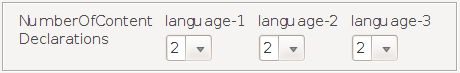
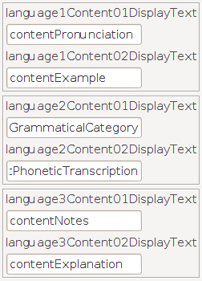
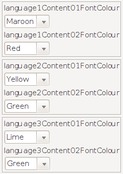
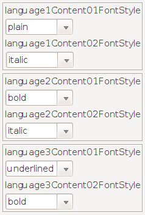
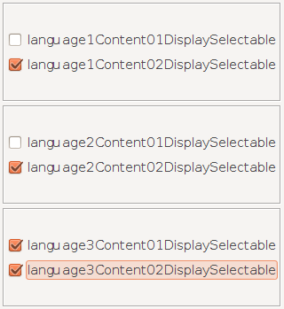

Content declarations
Content properties are new. They came up with version 3.0 of the DictionaryForMIDs tools.
Properties
With the content properties you can specify that there is a pronunciation
part, an explanation part, etc. in your dictionary. For each content you can
specify font colour, font style and so forth.
The content is specified for each languageX.

- languageXNumberOfContentDeclarations
Defines how many content-declarations exist for this dictionary. For each content-declaration the contentNN-properties need to be defined as described below. Note that all the contentNN-properties must have two digits: content01..., content02..., content03 etc !
The property languageXNumberOfContentDeclarations is optional. When this property is not set, then DictionaryForMIDs does not scan for content tags in the dictionary.
As an example, as shown on the screen shot, we chose the value 2 in the ComboBox, that is, the number of content-declarations for our dictionary is 2 and the dictionary itself has 3 languages. This is the maximum number of languages that the main PropertiesEditor supports.
languageXContentNNDisplayText
- languageXContentNNDisplayText
Text that is used on the user interface to identify the content. NN
needs to be replace with the content number.
As shown on the screen shot:
language1Content01DisplayText:contentPronunciation
language1Content02DisplayText:contentExample
language2Content01DisplayText:contentGrammaticalCategory
language2Content02DisplayText:contentPhoneticTranscription
language3Content01DisplayText:contentNotes
language3Content02DisplayText:contentExplanation
Predefined content is prefixed by "content". The following content is
predefined in DictionaryForMIDs:
contentDefinition
contentPronunciation
contentGrammaticalCategory
contentOrigin
contentSampleUsage
contentNotes
* Note: "contentDefinition" and "contentNotes" will become available in version 3.0.3
For predefined content there are default values for font colour, font style etc. If you do not want to use Predefined content, then you may choose any other name for languageXContentNNDisplayText.
languageXContentNNFontColour
- languageXContentNNFontColour
This property defines the font colour for the content. Font colour is specified as 'RRR, GGG, BBB' where RRR is the value for red, GGG for green and BBB for blue. Each one of the RRR, GGG, BBB component has to have a value between 0 and 255.
You are provided with ComboBoxes that have default values. Choose the color name and ContentProperties-Creator will automatically generate the RGB colour code for you.
Here are the choices that are shown on the screen shot. Each color name represents
a RGB color code. In the final DictionaryForMIDs.properties file, color names are not written, each name is
replaced by its actual code as show below:
language1Content01FontColour:128,0,0
language1Content02FontColour:255,0,0
language2Content01FontColour:255,255,0
language2Content02FontColour:0,128,0
language3Content01FontColour:0,255,0
language3Content02FontColour:0,128,0
| Maroon | 128,0,0 |
| Red | 255,0,0 |
| Yellow | 255,255,0 |
| Green | 0,128,0 |
| Lime | 0,255,0 |
| Navy | 0,0,128 |
| Blue | 0,0,255 |
| Teal | 0,128,128 |
| Aqua | 0,255,255 |
| Purple | 128,0,128 |
| Fuchsia | 255,0,255 |
| Olive | 128,128,0 |
| Gray | 128,128,128 |
| Silver | 192,192,192 |
| Black | 0,0,0 |
Note that you are free to choose any color you wish using the RGB color codes, that is, you are not obliged to choose only between the default ones. However note that these default ones are the common colors that are used most of the time.
languageXContentNNFontStyle
- languageXContentNNFontStyle
Defines the font style for the content. Allowed values are provided in the ComboBoxes as follows:
bold
italic
underlined
plain
Examples from the screen shot:
language1Content01FontStyle:plain
language1Content02FontStyle:italic
language2Content01FontStyle:bold
language2Content02FontStyle:italic
language3Content01FontStyle:underlined
language3Content02FontStyle:bold
This property is optional, the default value is plain.

- languageXContentNNDisplaySelectable
This is a boolean property with either the value true or false. Here,
that means either the CheckBoxes are selected or unselected. According to
the state of the CheckBoxes, the ContentProperties-Creator automatically
assigns the values true or false. Set these properties to true by selecting
the CheckBoxes or to false by unselecting them. Set them to true when the user
can turn on or off the display of these contents. Set them to false when these
contents are always displayed, i.e. the user cannot toggle their display on/off.
These properties are optional, the default value is true, so select the CheckBoxes.
They will be supported in a later version.
Here are the values chosen, as shown on the screen shot:
language1Content01DisplaySelectable:false
language1Content02DisplaySelectable:true
language2Content01DisplaySelectable:false
language2Content02DisplaySelectable:true
language3Content01DisplaySelectable:true
language3Content02DisplaySelectable:true
Content tags for the dictionaries
In the dictionaries the content parts are marked with the following syntax:
Each content has a start delimiter at the beginning and an end delimiter at the end.
Start delimiter:
[NN
where NN is the content number. This needs to be a two-digit number !
End delimiter:
]
To use a [ or ] character in the text (without content syntax)
a \ (backslash) must be prepended: \[ and \]
A newline-character is \n and a tab-character is \t
Here is an example for a language2 column:
-
dictionary [01dikshionari] [02noun] [03\nA book that contains translations for words.]
(Content numbers are boldfaced only for didactical purposes)
In that example the following properties are declared:
language2Content01DisplayText:contentPronunciation
language2Content02DisplayText:contentGrammaticalCategory
language2Content03DisplayText:contentNotes
Contents can also be nested. Example:
-
dictionary [01dikshionari] [03\nA book that contains translations for words. [02noun]\nAlso exists in electronic form]